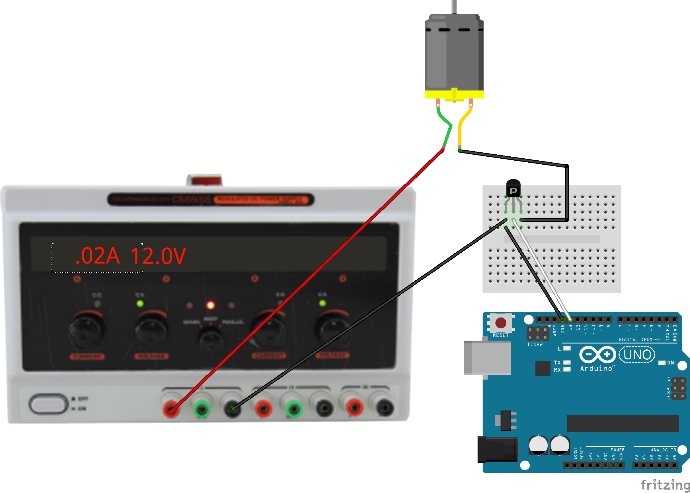
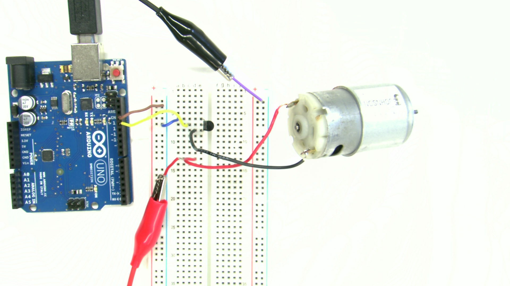
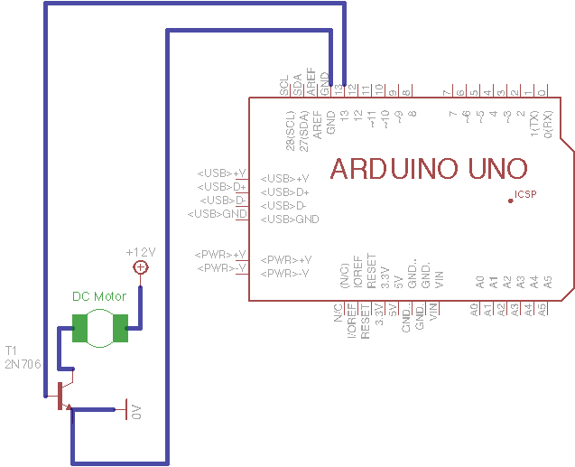

Drive a DC motor from an Arduino program.
A DC motor is a starting point for controlling physical motion. By itself, a DC motor spins fast with low torque, so they are usually coupled with a mechanical transmission. If the transmission is an integrated gearbox, it is called gearmotor. This example also works with gearmotors, which are useful for driving practical loads with a minimum of mechanical fabrication.
Unlike the bulb, the DC motor is polarized, and reversing the current will reverse the direction of motion. The circuit in this exercise is unipolar, and can only drive current through the motor in one direction. It is possible, however, to vary the motor speed by turning the transistor drive on and off rapidly to vary the average current through the motor. This is called pulse-width modulation, or PWM.
analogWrite() to create a PWM waveform on pin 9.The Arduino PWM run at a very audible 490 Hz frequency. Commercial motor drivers usually run at 20 kHz or higher so the noise is above the range of human hearing.
Even though the PWM signal is a digital waveform using only LOW and HIGH voltage levels, it is still an analog encoding. A PWM signal encodes a single numeric value in the duty cycle, the ratio of ON time to the cycle time, and there is no intrinsic discretization to a pulse width. The Arduino generates the PWM signal using a digital circuit so this particular PWM is quantized as a multiple of the CPU clock period, but it is also possible to generate PWM signals from analog circuits with no intrinsic resolution limit.
  